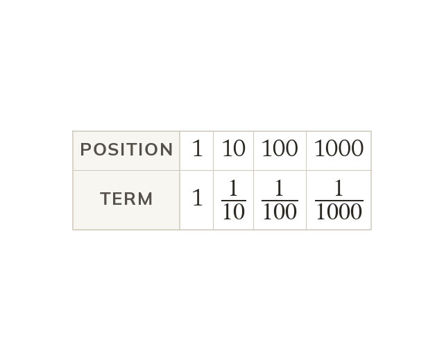

tends to
As n grows, the terms of get closer to
No term ever equals
So tends to
As n gets larger the terms of get smaller and closer to but no term is ever equal to
We say tends to and we do not say it equals
We say tends to and we do not say it equals